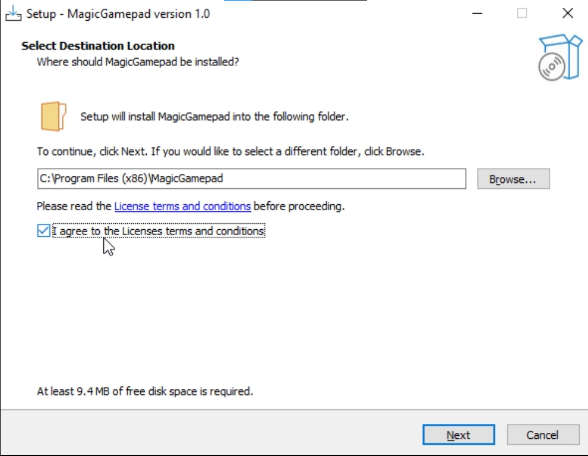
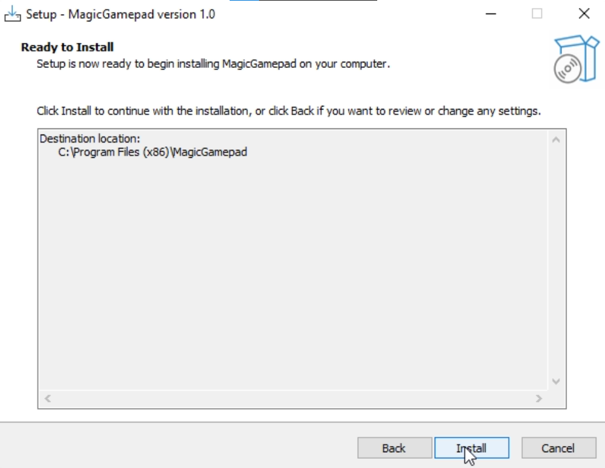
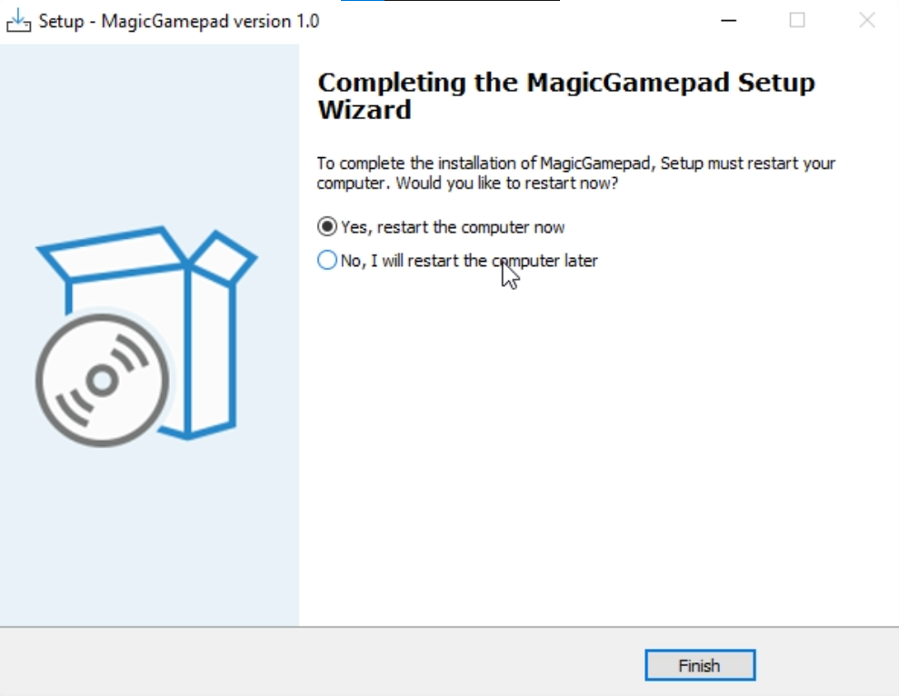
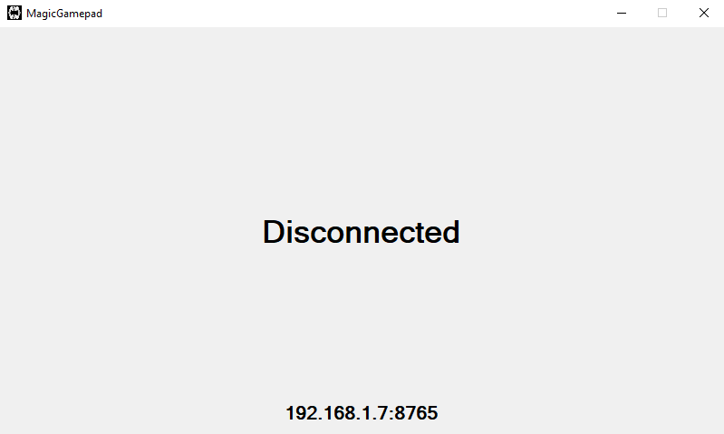
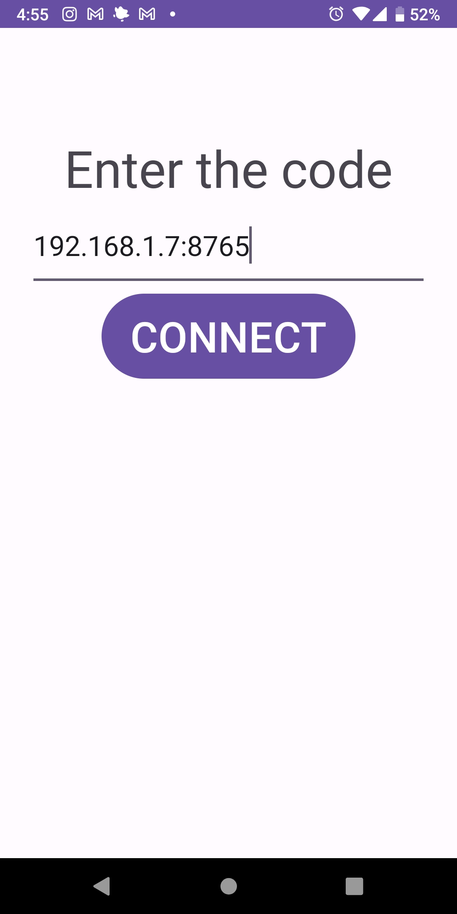
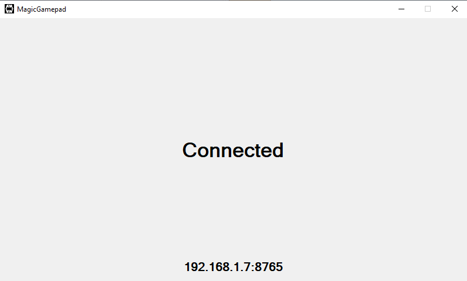

How to Install and Use the App
Step 1: Download and Install the App
- Download the desktop app from the provided link or by searching on Google: download
- Open the setup file.
Click “I agree to the Licenses terms and conditions”
If you want to change the location, change the installation location and then click "Next."

Click "Install"

For the app to work properly, it's recommended to reboot your system. You can do this by checking the reboot option and clicking "Finish," or click "No, I will restart the computer later" and click "Finish" to complete the setup without rebooting.
Step 2: Connecting Your Mobile to Desktop
Ensure that both devices are connected to the same network (LAN, Wi-Fi, mobile hotspot, or USB tethering—internet connection is not required). If you are using mobile hotspot or USB tethering, it is necessary to turn off mobile data or Wi-Fi for the app to properly connect, or you will need to manually connect.
Open the desktop app.
You'll see the connection status and IP address displayed.
On your mobile device:
Open the app.

Click "Auto Connect" to automatically connect to your computer.

Or click "Manual Connect," enter the displayed IP address, and click "Connect."

You are now successfully connected.
If you prefer a video tutorial, click here